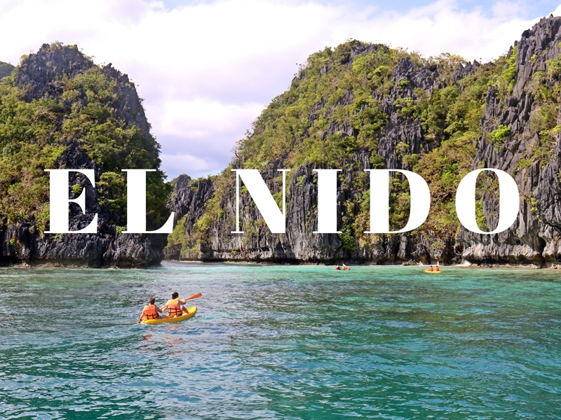
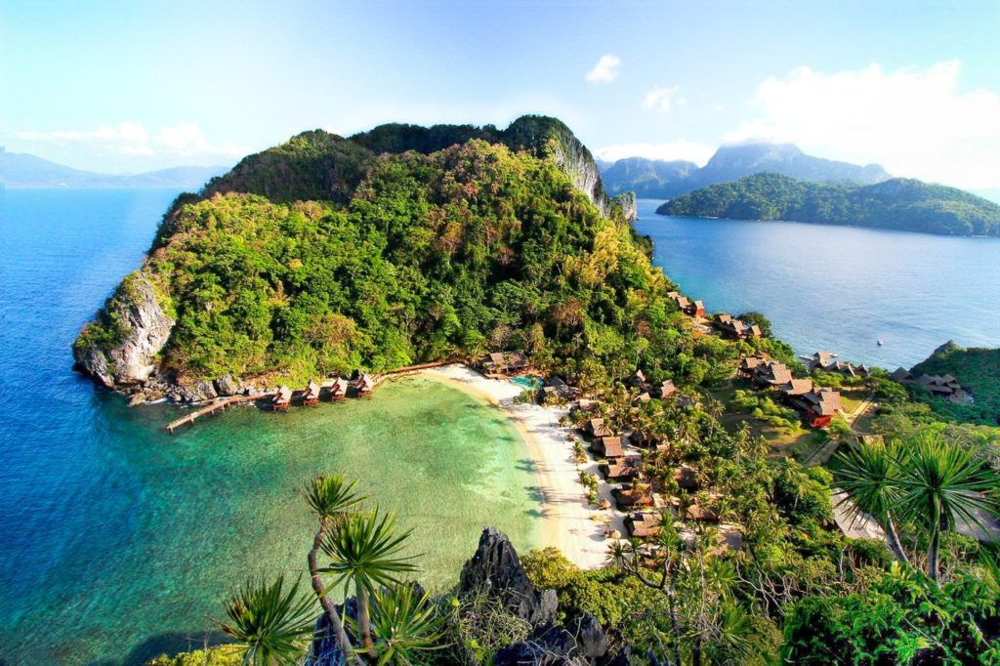
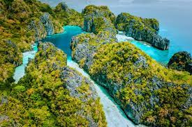

El Nido, officially the Municipality of El Nido (Cuyonon: Banwa i'ang El Nido, Tagalog: Bayan ng El Nido), is a 1st class municipality in the province of Palawan, Philippines. According to the 2020 census, it has a population of 50,494 people. [3]
It is about 420 kilometres (260 mi) south-west of Manila,[5] and about 238 kilometres (148 mi) north-east of Puerto Princesa, Palawan's capital.[6] A managed resource protected area,[6] it is known for its white-sand beaches, coral reefs, limestone cliffs and as the gateway to the Bacuit archipelago.

El Nido is situated in Bacuit Bay and covers a land area of 465.1 square kilometres (179.6 sq mi).[6][7] It is in the northernmost tip of mainland Palawan and is bordered by the Linapacan Strait in the north, the Sulu Sea in the east, and the South China Sea in the west. El Nido includes 45 islands and islets,[5] each with its own unique geological formations. The highest peak is at Cadlao Island, towering up to 640 metres (2,100 ft) above sea level.[8] 